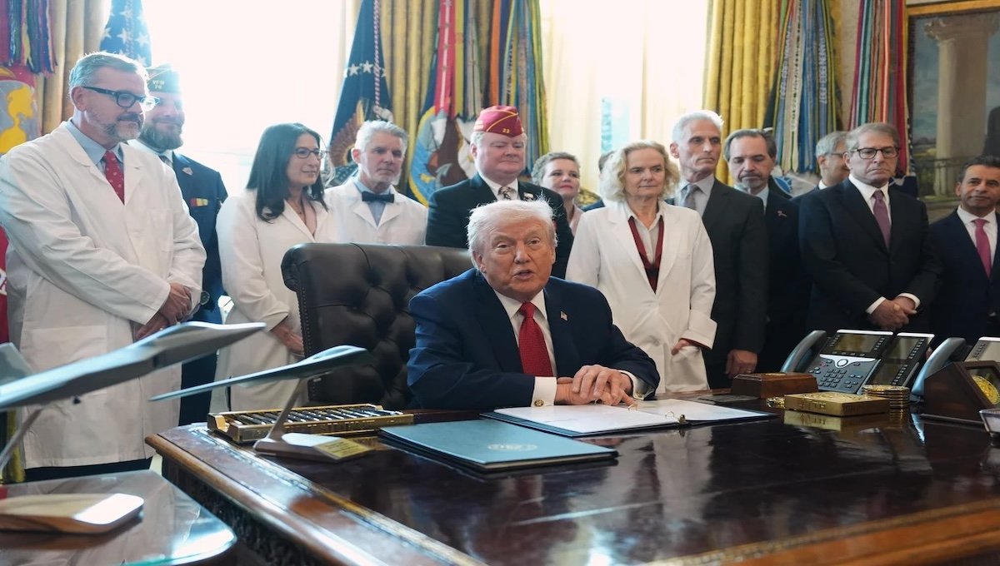

What does this means?
Under the U.S. Controlled Substances Act, the difference between marijuana being classified as a Schedule I versus a Schedule III substance is significant in both legal meaning and practical impact. As a Schedule I drug, marijuana is defined as having a high potential for abuse, no currently accepted medical use in the United States, and a lack of accepted safety for use under medical supervision. This classification places marijuana in the same category as substances like heroin and LSD and means it is federally illegal to manufacture, distribute, prescribe, or possess outside of very limited, tightly controlled research settings. Research on marijuana is heavily restricted, requiring special federal approvals and access to limited sources. Additionally, cannabis-related businesses face major obstacles, including restricted access to banking services and the inability to deduct ordinary business expenses under IRS Section 280E.
Marijuana classified as a Schedule III substance, it is formally recognized as having an accepted medical use and a lower potential for abuse compared to Schedule I drugs. Schedule III substances, which include medications like ketamine and Tylenol with codeine, can be prescribed by doctors in FDA-approved forms and are still regulated but permitted under federal law. Reclassification to Schedule III would significantly reduce barriers to medical research, making studies easier to conduct and expand. It would also ease financial and regulatory pressures on cannabis businesses, most notably by eliminating the application of IRS Section 280E, allowing companies to take standard tax deductions. Banking and financial access would likely improve as well, since the industry would no longer be tied to a Schedule I substance.
However, moving marijuana to Schedule III does not amount to full legalization. Recreational marijuana would remain federally illegal, the Drug Enforcement Administration would continue to regulate it, and interstate commerce would still be restricted without additional legislation. The importance of the change lies in the fact that Schedule III classification rejects the longstanding federal position that marijuana has no medical value and brings federal policy closer in line with existing state medical cannabis programs. While it does not resolve all legal conflicts, the shift represents a major step away from prohibition-era logic and opens the door to further reform.
Iran remains subject to extensive U.S. sanctions. Neither Tehran nor Beijing immediately responded to the report, though China, one of Iran’s primary trading partners, has consistently denounced U.S. sanctions as unlawful.
What Trump did?
President Trump signed an executive order on Thursday to reschedule marijuana to a lower drug classification, one of the most significant changes to drug policy in decades.
"Today I'm pleased to announce that I will be signing an executive order to reschedule marijuana from a Schedule I to a Schedule III controlled substance, with legitimate medical uses," Mr. Trump said in a ceremony in the Oval Office on Thursday, flanked by medical professionals. "We have people begging for me to do this. People who are in great pain."
He added: "I think I probably have received more phone calls on this, on doing what we're doing — I don't think I received any calls on the other side of it."
The order directs the attorney general to "take all necessary steps to complete the rulemaking process" to reclassify marijuana from a Schedule I drug to a Schedule III drug "in the most expeditious manner." According to the Drug Enforcement Administration, Schedule I applies to substances with "no currently accepted medical use and a high potential for abuse" — the agency's most stringent classification, which is also for heroin, LSD and ecstasy in addition to marijuana.
The DEA uses Schedule III for substances "with a moderate to low potential for physical and psychological dependence." Other Schedule III drugs include Tylenol with codeine, testosterone, anabolic steroids and ketamine.

"For decades, this action has been requested by American patients suffering from extreme pain, incurable diseases, aggressive cancers, seizure disorders, neurological problems and more," the president said.
Moving the drug to a lower schedule does not change the fact that it remains illegal for recreational use at the federal level. But it could open the door to more research into marijuana and expanded medical uses. It might also lower the tax burden for state-licensed marijuana dispensaries in the dozens of states that have legalized the drug, since federal law bars businesses that sell Schedule I substances from taking some tax deductions.
"Rescheduling will help accelerate research, reduce stigma, attract new investment, and ease some of the tax burdens that have held the industry back. The next transformation will happen when interstate commerce barriers between states are removed," said Vince C. Ning, the co-CEO and co-founder of cannabis wholesale platform Nabis.
"We will have answers very soon. This will allow us to study this issue and to answer these questions for the American people," Health and Human Services Secretary Robert F. Kennedy Jr. said at the White House.
The president said during his campaign last year that he believes marijuana should instead be a Schedule III drug.
The Biden-era Department of Health and Human Services also recommended bumping marijuana down to Schedule III. The Justice Department, the DEA's parent agency, proposed a rule to reschedule marijuana last year, but the process became mired in over a year of legal and administrative wrangling, leaving the drug in Schedule I status.
Marijuana has been deemed a Schedule I drug since the classification system was created in 1970. In recent years, however, most states have approved the drug for certain medical uses, and 24 states have legalized the drug recreationally. These state policies technically clash with federal law, but the federal government has opted against cracking down on cannabis businesses that are licensed by states.
Some members of both parties have backed looser federal marijuana regulations, often pointing to potential medical benefits — and polling that shows Americans are increasingly supportive of legalizing medical or recreational uses of the drug.
During the 2024 campaign, Mr. Trump said he planned to vote yes on an unsuccessful Florida ballot measure to legalize marijuana recreationally in the state. The measure drew just under 56% of the vote, falling short of the 60% needed to pass.
"I believe it is time to end needless arrests and incarcerations of adults for small amounts of marijuana for personal use. We must also implement smart regulations, while providing access for adults, to safe, tested product," the president wrote on Truth Social last year.
But some lawmakers remain wary. A group of 22 Republican senators wrote an open letter to Mr. Trump on Wednesday urging him to leave marijuana in the Schedule I category, pointing to health concerns along with worries about intoxicated driving and worker absenteeism.
"We cannot reindustrialize America if we encourage marijuana use," the lawmakers wrote. "In light of the documented dangers of marijuana, facilitating the growth of the marijuana industry is at odds with growing our economy and encouraging healthy lifestyles for Americans."
A group of nine House Republicans penned a letter over the summer urging Attorney General Pam Bondi not to shift marijuana to a lower schedule, arguing "there is no adequate science or data" to support the change.
"Marijuana, while different than heroin, still has the potential for abuse and has no scientifically proven medical value," the letter states. "Therefore, rescheduling marijuana would not only be objectively wrong, but it would also imply to our children that marijuana is safe. That couldn't be further from the truth."
The Societal News Team 18DEC2025